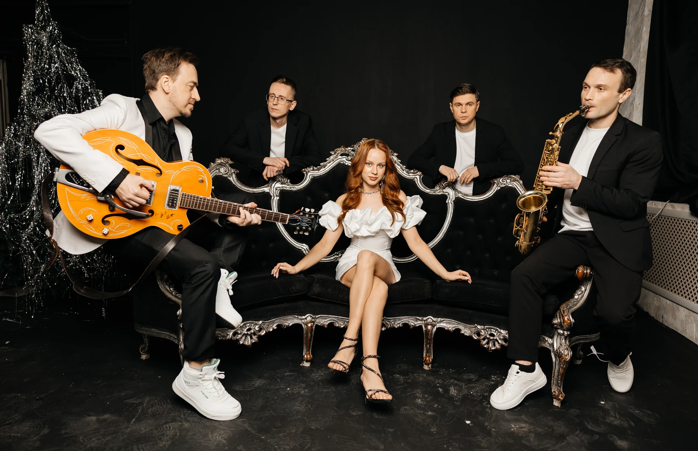
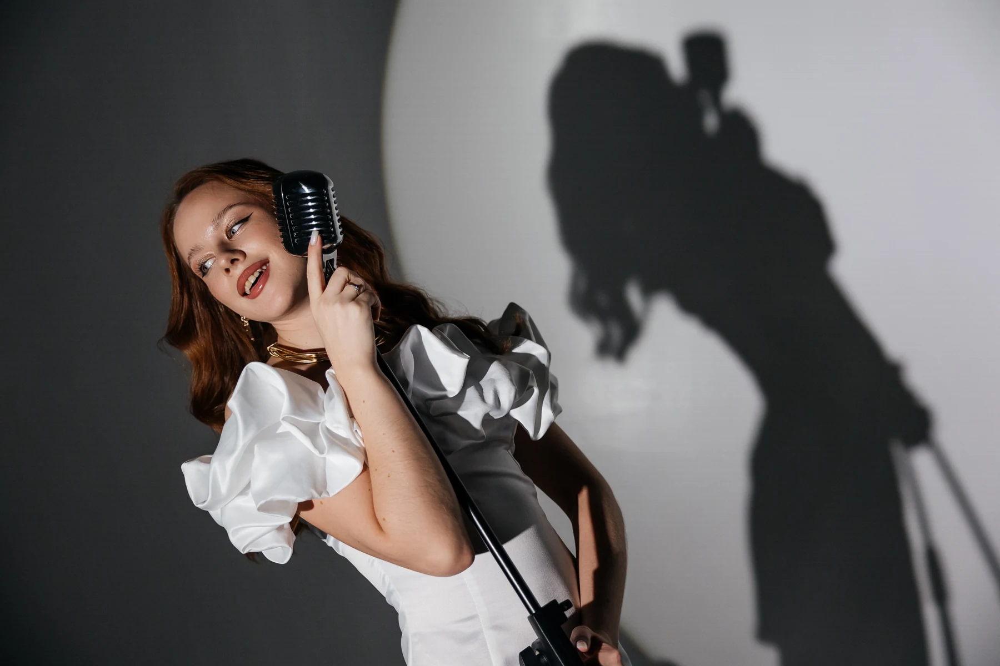
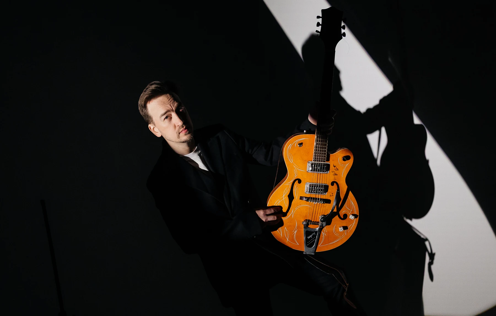
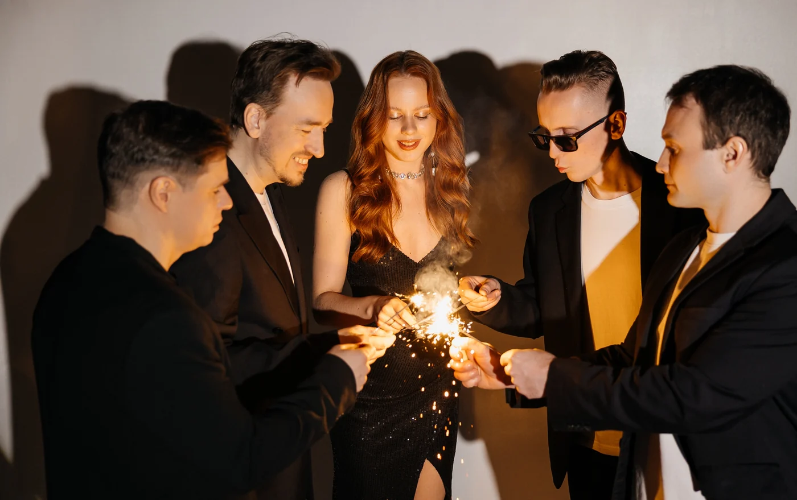

01 / ГРУППА
ПОРТФОЛИО
Группа, трио, голос и гитара.
Живые выступления и студийные кадры.
02 / ТРИО
ТРИО LIVE
03 / ВОКАЛИСТ-ГИТАРИСТ
ЛЕТНИЙ ДОЖДЬ
04 / ФОТОСЕССИЯ
В КРУГЕ СВЕТА




Группа, трио, голос и гитара.
Живые выступления и студийные кадры.



